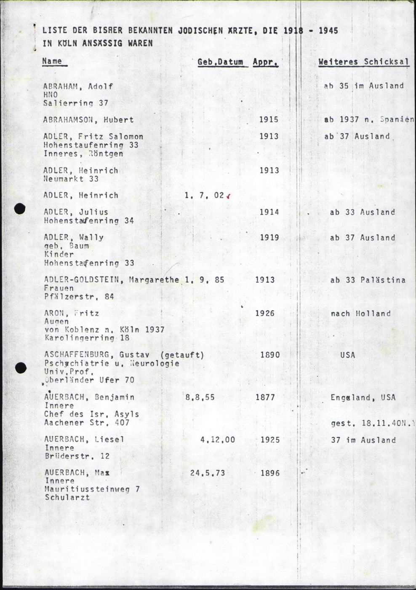
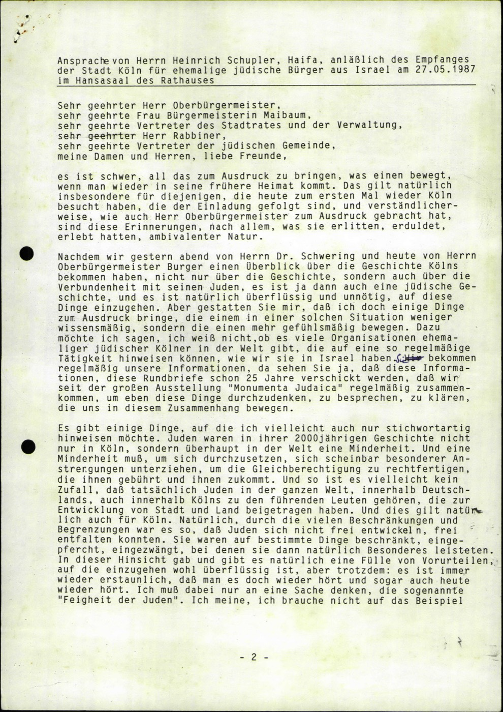
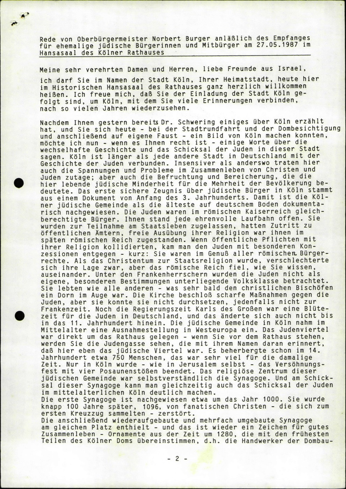

p. 2 — Allgemeine Jüdische, März 1986
Ein Wiedersehen nach 50 Jahren — Ehemalige jüdische Bürger zu Gast in ihrer alten Heimatstadt Köln.
A reunion after 50 years — former Jewish citizens as guests in their old home city of Cologne. (Press report on the first hosting of the emigrant delegation.)

G-F-0276-6 · p. 2 — "Wiedersehen nach 50 Jahren"
p. 50 — Schoplers Ansprache, 27.05.1987
Ansprache von Herrn Heinrich Sch[o]pler, Haifa, anläßlich des Empfanges der Stadt Köln für ehemalige jüdische Bürger aus Israel am 27.05.1987 im Hansasaal des Rathauses.
Sehr geehrter Herr Oberbürgermeister, sehr geehrte Frau Bürgermeisterin Maibaum, … meine Damen und Herren, liebe Freunde: es ist schwer, all das zum Ausdruck zu bringen, was einen bewegt …
Address by Heinrich Schopler of Haifa — chairman of the Organization of Cologne Emigrants — at the City of Cologne's reception for former Jewish citizens from Israel, 27 May 1987, in the Hansa Hall of the Rathaus. "It is hard to express all that moves one …"

G-F-0276-6 · p. 50 — Schopler's address
p. 62 — Rede von OB Norbert Burger
Rede von Oberbürgermeister Norbert Burger … für ehemalige jüdische Bürgerinnen und Mitbürger am 27.05.1987 …
Ich darf Sie im Namen der Stadt Köln, Ihrer Heimatstadt, heute hier im Historischen Hansasaal des Rathauses ganz herzlich willkommen heißen. … um Köln, mit dem Sie viele Erinnerungen verbinden, nach so vielen Jahren wiederzusehen.
Speech by Lord Mayor Norbert Burger … 27 May 1987. "In the name of the City of Cologne — your home city — I bid you a warm welcome here in the historic Hansa Hall … to see Cologne again, with which you connect so many memories, after so many years."

G-F-0276-6 · p. 62 — Mayor Burger's welcome